|
|
MySkit Tutorial #1 - Create Your First Skit!
|
|
Contents of this website are freeware and/or copyrighted material, and may not be sold
under any circumstances.
Email: dogsbody@dogsbodynet.com
Home:
https://dogsbodynet.com
|
Creating Your First Skit!
Any PLEO owner has probably noticed that PLEO moves!
PLEO moves a lot in fact. Besides
walking, most PLEO movement is controlled by skits, made with a program
like MySkit.
In
this tutorial, we focus on creating a simple skit.
Our goals are:
So you want to make PLEO do something? No
problem. Let's get started!
|
(1)
|
Install MySkit if you haven't done so
already.
Download the
MySkit
Installer
to your PC desktop. Double click the program &
follow the simple step-by-step instructions.
|
 |
|
|
(2)
|
Select the "Start" Menu, then
"Programs", "PLEO Tools", and finally "MySkit".
The
first time you start MySkit, you see the "Welcome to MySkit" window
(see
right).
You're asked if Windows should use MySkit to open PLEO skits.
This only
appears once & you won't be bothered by it again.
Click "OK" (recommended).
|

|
|
|
(3)
|
If you clicked "Skip"
instead, Windows is not
configured. You'll need to start MySkit first, then use "Open" from the toolbar or File Menu.
|
|
|
|
| 2.0
Create a PLEO Performance |
(1)
|
Time for something
interesting. After starting MySkit, you'll see two
editors shown -- one for Motion & one for sound. For
the moment, we'll ignore the Wave editor.
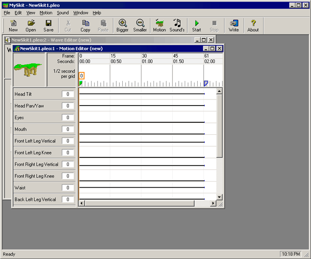
|
|
|
|
(1)
|
First, let's make the motion editor
bigger. Click on the toolbar "Motion"
button. The motion editor fills the MySkit window (see
below).
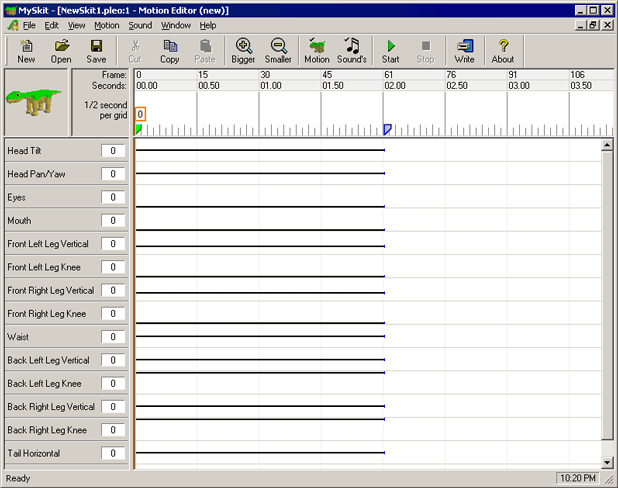
Down the left side is a list of PLEO's movable joints.
There are quite a
few -- you might need the scrollbar to see them all.
Below the toolbar, is the 3D PLEO preview, and timeline (or
ruler-bar). If you click-n-drag on the preview, the PLEO
image rotates around for different views.
|
|
|
(2)
|
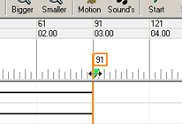
First, we need to lengthen the skit slightly. Move the
mouse over keyframe blue tab at time 61, and left-click..
Note the tab turns green.
Next, click-n-drag the tag to frame 91 (the 3 second mark) as shown.
|
|
|
(3)
|
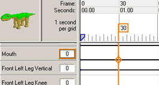Move the mouse back to frame 30 (the 1 second mark) and
left-click. This moves the orange cursor.
Next, move the mouse down to where the
orange marker & black line for "Mouth" cross, and
left-click. An
orange "edit-diamond" appears on the intersection. An
orange
box also appears next to the servo
title. |
|
|
(4)
|
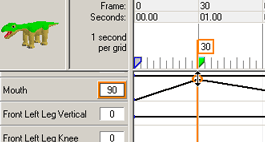
Time
to get our hands dirty. Click-n-drag the orange
edit-diamond upwards until the Mouth servo reads 90 degrees.
Alternatively, you could have pressed Enter, or clicked on the orange
edit box. You'd then type in "90" directly.
|
|
|
(5)
|
Punching numbers is a little
tedious. So let's use the "PLEO Window"
instead! From the View menu, click "PLEO Window"
(see
right). You get a bigger PLEO with a media-bar along
the bottom.
Click the pencil icon
in the lower right
to enable editing.
Now just click-n-drag on PLEO's legs & head. Easy
eh? Adjust PLEO as shown. Watch the
motion editor while adjusting &
you'll see the values change. Here are settings to aim for:
- "Head Tilt" to be "18"
- "Head Pan/Yaw" to be "-50"
- "Mouth" to be "90"
- "Front Left & Right Leg Vertical" to
be "-30"
- "Front Left & Right Leg Knee" to be
"70"
- "Waist" to be "-15"
- "Back Left & Right Leg Vertical" to
be "45"
- "Back Left & Right Leg Knee" to be
"-90"
Click-n-drag on PLEO's body to rotate & view from
different angles. |
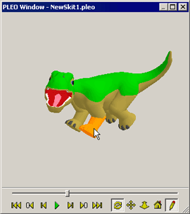 |
|
|
|
(6)
|
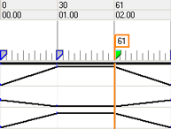Only
a couple little things left. We need to make PLEO pause
slightly so it looks less mechanical.
Go back to the Motion Editor, and click on time 30 tab if not
selected. The tab
turns
green.
Press the toolbar "Copy" button. Click on time 61,
and press the "Paste" button. A copy of our keyframe
appears.
|
|
|
| (7) |
Finally, let's make PLEO look happy
with some tail wagging..
MySkit has
a nifty
tool for this otherwise tedious challenge. From the Motion
menu,
select "Tailwag
Wizard".
The default settings are fine, so click OK.
Tada! Instant tail wagging.
Don't like the result? Select Undo from the Edit Menu & try again.
Feel free to try the
different settings here. The small preview
shows how fast PLEO's tail will move.
|
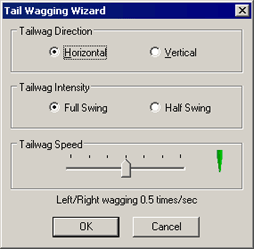
|
|
|
|
(8)
|
Save it!
Click the toolbar "Save" button. Because this is a
new performance, MySkit asks for a filename.
Save somewhere on your PC -- not the memory stick -- preferably a
folder just for skits. MySkit refers to this as your "action
directory".
Type "firstskit" (or whatever filename you like) and click the
Save button.
|
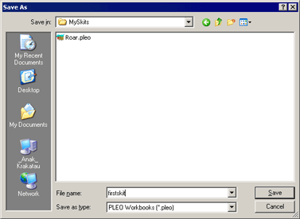 |
|
|
|
|
(1)
|
Ok, the moment of truth. Let's
see what its going to look like on PLEO.
Click on the "PLEO Window" -- anywhere but the media-bar.
Click on the
move-to-start button
(left-most). You should see PLEO back in its default standing
position.
|
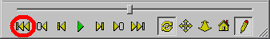 |
|
|
(2)
|
Now click the green start button
to begin playback.
PLEO should look at you & wag his tail.
|
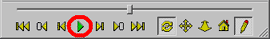 |
|
|
(3)
|
Congratulations!
You've finished the first tutorial!
Your first PLEO skit is ready to roll!
Click-n-drag on PLEO to rotate around to different angles. Try
the replay again. Feel free to play around with the media
controls.
In the next tutorial, we cover adding
sound!
Got a question? Ask Dogsbody!
|
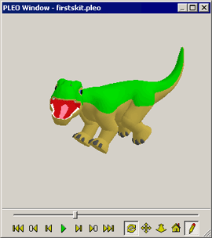 |
|
|
|
|
|
|
|
Legalese: These programs are provided AS IS without any warranty, expressed or implied.
This includes without limitation the fitfulness for a particular purpose or
application. People using the software bear all risk
as to its quality and performance. The user of the software
is responsible for any damages whether direct, indirect, special,
incidental or consequential arising from a failure of these programs to operate in
any manner desired. Etc, etc...
"PLEO" is a trademark UGOBE, Inc.
|
|